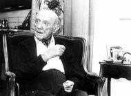

Del amor con Clementina
Cuando se fundó el Instituto de Cálculo, su director entonces, el doctor Manuel
Sadosky, vislumbró que el futuro del cálculo, y por qué no, el futuro mismo, dependía
de las computadoras. Por ello, luego de innumerables esfuerzos logró que llegara
a Buenos Aires la primera computadora de América Latina. A un costo de 300.000
dólares, con sus cintas magnéticas de carrete abierto y su procesador de válvulas,
la portentosa máquina ocupaba dos inmensos cuartos del pabellón I de Ciudad Universitaria
y tenía una memoria de 4K. Un simpático programa audible le hacía sonar la melodía
del fox "Clementine" al iniciar la sesión de trabajo. De ahí surgió el nombre
que hasta hoy la evoca con un aire mítico, símbolo de la universidad emblemática
que representa. Alrededor de 100 investigadores conformaban el Instituto en sus
comienzos y todos los grupos de trabajo requerían del poder de cálculo de Clementina.
La exprimían durante 24 horas los 365 días del año. Uno de los trabajadores nocturnos,
Wilfredo Durand, confinado a investigar durante las horas de descanso debido a
su mal carácter, inventó el COMIC, el primer lenguaje de computadora argentino,
adaptado especialmente a problemas hidráulicos. "Los investigadores habían sido
recogidos de todo el país y de muchas disciplinas. Oscar Varsavsky se especializaba
en modelos económicos, mientras que Pedro Zadunaisky lo hacía en cálculos de órbitas
planetarias. Uno de los platos fuertes se lo llevaba la investigación operativa,
donde sobresalía Julián Araoz. Allí tenían especial interés los problemas de tipo
industrial, que en aquel momento estaban muy en boga. Entre las empresas que encontraron
en la famosa computadora y el Instituto de Cálculo un instrumento de modernidad
y progreso estaba la entonces poderosa YPF", recuerda hoy Sadosky. En el año 66
llega la intervención a la Universidad y con ella el éxodo de los investigadores.
La computadora fue desguazada a manos del interventor Zardini. En 1991, la discusión
emprendida por un grupo de matemáticos de nuestro país se coronó con la refundación
del Instituto de Cálculo. A cargo del mismo fue designado el actual decano de
la FCEyN, el doctor Pablo Jacovkis. Desde ese momento, sus modernas aulas albergan
compactas y coquetas PCs miles de veces más rápidas; aunque sus usuarios, herederos
de los pioneros que se formaron junto a Clementina, llevan la impronta de aquella
generación de visionarios. |
|
|
INSTITUTO DE CALCULO
CIENCIA APLICADA POR
APLICADOS
CIENTIFICOS Desde 1960, año de su creación, hasta que en 1966,
cuando la Universidad fue golpeada por la Noche de los Bastones Largos, el Instituto
de Cálculo se abocó a resolver problemas concretos de la realidad. Es decir, hacer
-en términos de los especialistas- ciencia aplicada. La última recuperación democrática
trajo consigo la refundación del Instituto en 1991. En esta nueva etapa se abrieron
diversas líneas de investigación que van desde el desarrollo de nuevos métodos
estadísticos, la modelización del flujo turbulento del río Atuel, hasta la determinación,
con fines sanitarios, de las pautas de crecimiento de los niños argentinos. Sus
integrantes mantienen hoy cinco o seis líneas de investigación a largo plazo,
permanentes. Sin embargo no es infrecuente que a pedido de terceros surjan trabajos
de dos o tres meses en los que hay que dar respuesta a un problema determinado,
ya sea de ingeniería, economía, medicina, medio ambiente o computación.

"Muchos
de los emprendimientos actuales -explica Víctor Yohai, director del Instituto-
se plantean de entrada con un enfoque interdisciplinario. Así, por ejemplo, el
grupo de Física Médica se dedica, entre otras cosas, a la búsqueda de patrones
e interpretación de electroencefalogramas. Para esto se requiere estar en permanente
interacción con médicos neurólogos y fisiólogos. Este grupo, además, tiene un
convenio de intercambio con la Universidad de Luebeck, Alemania, donde se especializa
uno de nuestros becarios". También participaron en el desarrollo de un método
para la localización de focos epilépticos, lo cual es de utilidad cuando se utiliza
la cirugía para el tratamiento de la enfermedad.
El grupo de Análisis
Numérico se ocupa de la resolución numérica de ecuaciones diferenciales y ha realizado
diversas aplicaciones a problemas reales. Entre otras áreas de aplicación, se
pueden mencionar los modelos hídricos y de ingeniería de reservorios, un tema
de intensa demanda por parte de las compañías petroleras.
El grupo de
Estadística desarrolló "métodos robustos", que se incorporaron al famoso programa
computacional para análisis estadístico S-PLUS. Los métodos robustos tienen la
ventaja de funcionar bien aunque las muestras utilizadas tengan algunas observaciones
atípicas o con errores groseros.
El Instituto desarrolla también una variada
tarea docente. Se dictan cursos de posgrado de Estadística para médicos y otros
profesionales de áreas biológicas. Este año estos cursos han contado con la participación
de más de 40 profesionales. También depende del Instituto una Maestría en Física
Médica, y en asociación con el Departamento de Matemática, una Maestría en Estadística
Matemática. Frecuentes tesis doctorales y de licenciatura dirigidas por los investigadores
del Instituto completan el panorama académico.
Con financiación de la
Facultad de Ciencias Exactas y Naturales, de la UBA y del CONICET y un elenco
estable de sólo 11 investigadores (de los cuales 2 se hallan en formación), el
Instituto de Cálculo se compromete fuertemente con la excelencia: en su Memoria
del año 1997 se informan 23 publicaciones científicas en revistas con arbitraje,
1 libro, 9 artículos publicados en libros y actas de congresos, 12 artículos en
prensa, 18 participaciones en congresos científicos, 23 comunicaciones a congresos
científicos, 11 direcciones de tesis y 12 trabajos de asesoramiento... y más.
Nada se informa sobre control antidoping...
Artículo publicado en la revista EXACTAmente. Todos los derechos reservados. Se permite su reproducción citando la fuente. Última actualización jun-06. Buenos Aires, Argentina. |